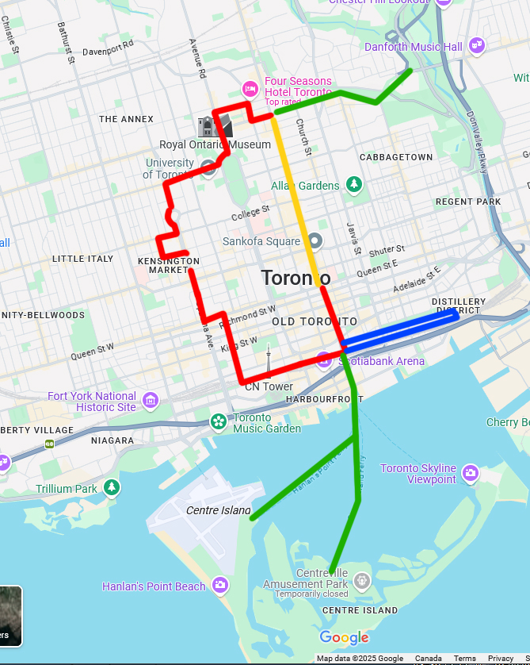

UPCOMING PROJECTS
HAVE A LOOK AT OUR INTERESTING PROJECT PlANS. WE ARE ACTIVELY SEEKING VOLUNTEERS collaborators and sponsors, so please reach out if you like what were doing!
Community Picnics and Urban eventing Free Rides: 2026 SCHEDULE TBD
Community Picnics and Urban Eventing Free Rides
Join us for casual group bike rides downtown, where we'll enjoy refreshments courtesy of our great local sponsors(vegan, moderate alcohol friendly permitted and all inclusive). Our events bring together individuals from diverse backgrounds, promoting a sense of community and fostering an ethic of safety and care for others. We'll also offer bicycle education and resources, with a focus on supporting marginalized demographic populations. Come ride with us and be part of a positive, community-driven movement.
addressing Low Quality Food Vendors with art SUBSIDIZING VEG
We're on a mission to transform the food landscape by addressing the root causes of low-quality food sources. Through cutting-edge research and community engagement, we're working to reduce the prevalence of unhealthy food options and promote nutritious alternatives. Our approach combines modern trade insights, technological innovation, and a deep understanding of historical context. We actively participate in chamber of commerce meetings and community planning initiatives, using creative and unconventional methods to communicate our message and drive positive change.

Films: The Human Retina Mushrooms and Insects
We present a series of short artistic films that explore the intricate relationships between humans and the natural world. From the fascinating world of insects and mushrooms to the interesting lesser known functions of human biology - starting with the increased sensitivity that humans have for seeing green objects. our films showcase the diversity of human experience and the interconnectedness of all living beings to encourage a critical perspective on self biology apart from the inherent context of modern traditional systems of survival. Join us for a thought-provoking exploration of the human condition, informed by the wisdom of nature and the insights of visionary thinkers like David Suzuki.
Eating With Jains: A perspective lense to contrast normalized North American culture with forces that target youth for corporations to profit from dependency on poor quality addictive products
Eating With Jains: A Cultural look at the fundamental principles that shape the successful culture of jains. Jainism is regarded the "most peaceful" religion in the world. We look at the principles of the sacrifices they make in north america and use this point of view as a point of cultural reflection. We ask " what creates what is valuable to us in north america". Join us for a thought-provoking exploration of the relationship between food, culture, and the environment. Drawing inspiration from Jain traditions and other cultural philosophies, we'll examine the principles behind consumption and its consequences for humanity and the natural world. Through a multifaceted lens, we'll consider the impact of our choices on the world around us and explore new perspectives on compassion, appreciation, and our role as stewards of the earth. This is an ongoing video project.
MAGAZINE: CHALLENGING CULTURAL NORMS: A review of happenstance history that persists in dysfunctional social
behaviours enabled through non-critical culture, and implicit in modern global corporate environment: painting a picture of how traditions (not necessarily the best)dominate our culture and why you dont have to accept
Challenging Cultural Norms
We often take for granted the cultural norms and industries that shape our lives, but a closer look at history reveals that many of these phenomena are the result of arbitrary circumstances, coincidences, and marketing efforts rather than inherent value or merit. The ubiquity of certain products or practices can be attributed to a complex interplay of historical events, cultural trends, and economic forces. By examining these factors, we can gain a deeper understanding of how our culture has been shaped and challenge the assumption that what's prevalent is necessarily what's best. This critical perspective can empower us to make more informed choices and potentially redefine what's considered 'normal' in our society."
HOMELESS ART GALLERY: Bringing INDPENDENCE AND RECOGNITION to homeless AND MENTALLY ILL people OF OUR STREETS(with bicycles and paint)
Homeless Art Gallery: An Experimental Study
We're conducting an experimental study to explore the creative expressions and experiences of homeless individuals through artwork. By providing art supplies and inviting participants to share their stories, we're gathering insights into the lives and perspectives of those often overlooked by society. This project aims to contribute to a deeper understanding of the complexities surrounding homelessness and the human experience and hopes to uncover an interesting perspective of value and urban geography.
we gave homeless people a brief on artistic symbology and asked them to create images that represent their perspective of value.
THE REAL TORONTO World famous urban bike tour and picnic- The Golden tour
Explore the Real Toronto: A World-Famous Bike Tour
we believe that toronto is best enjoyed on a bicycle. On a weekly basis we do casual tours through downtown torontos gem locations.
Join us for an unforgettable day of cycling through Toronto's most iconic neighborhoods. Our Golden Tour takes you on a scenic journey from Cumberland to the Distillery District, ending at the Eaton Centre near Union Station. We stop at three stations for one hour each(unless we plan otherwise)
this is for newcomers
Special dates
1.Newcomers day (once per month)
2.New riders day (once per month)- extra safe trip for newer riders with less confidence
Notes:
complimentary plantain and coffee at a special restaurant sponsor
moderate alcoholic drinks permitted
1 hour stops
pack light- try for no more baggage than water bottle and laptop
shopping during the trip is permitted
dont ride close together for safety
play support role to eachother
expected that you know how to ride a bike
Trips may be cancelled due to weather. but we have an alternative tour route that passes down younge street through indoor malls.
we do easter egg hunts, art stops and play a version of cops and robbers and hide and seek around the city on some dates. baton pass, capture the flag, capture the city
mountain bikes or hybrid
no motorized bikes
Casual attire

bicycle education WORKSHOP : Whats under the helmet?
Bicycle helments can be a great safety precaution, however, a majority of urban bicycle accidents are not the cause of head injury, they are the cause of vehicle collisions. If it were not for the rattling , the smog, the
the police recommend wearing helmets, they wear helmets themselves. they make a program that gives children low quality bicycles. . fortunately, dense urban areas are well equipped for low speed riding... you dont need to go very far to get where you need to go in most cases(with an exception of trucks)
Bicycle Education Workshop: Beyond the Helmet
Join our unique bicycle education workshop, where we dive deeper than just cycling skills. Our non-traditional approach explores the concept of the bicycle, its history, and its potential as a vehicle for change. Through our "What's Under the Helmet" program, you'll gain a new perspective on individuality, self-learning, and safe riding practices.
We start with addressing that helmets and pads dont do nearly as much as using your head and your ears and overcoming hinderances to enjoyment and convenience of urban cycling. we instruct students on how to be confident, independent riders and offer our insights from many years experience riding.

challenging traditional entertainment with indigenous drums and instruments: multi- organizational collaborative Trade Show Event and art exhibit 2026
Rhythm and Reflection: A Global Drum Experience
Join us for a unique Trade Show Event and Art Exhibit in 2026, celebrating the universal language of drums. We'll explore the rich history of drumming in Indigenous cultures all around the world, and show how all cultures have used similar patterns for drumming. featuring guests from diverse communities and youth. This event will showcase the shared significance of drums across cultures, highlighting the commonalities that unite us and relating rhythm motion and power to direct products of body movements.
BIcycle Photography workshop: How you can use a bicycle to create powerful visual content
Capture the City
Join our workshop to learn how to create powerful visual content using a bicycle. We'll cover the challenges of shooting on the go, including adapting to changing lighting conditions and limited angles. You'll learn tips and tricks for stabilization, editing, and safety recommendations for capturing high-quality content while cycling. We start with showing how being able to move fast around a landscape can be more important to the quality of images in terms of subject matter, than having high quality cameras and we use camera phones for this workshop. We end this session with an invitation to a collaborative urban photography forum and access to our capture the city blitz program where we have explore the outer city in search of interesting captures.
Redefining indigenous relationship:relating movement to physical activity and energy
Rethinking Energy and Movement: A Holistic Approach
We're exploring the direct relationship between humans and energy through the lens of cycling. By examining the connection between food, water, and physical activity, we aim to promote a deeper understanding of the interconnectedness of human, environmental, and technological systems. Our program redefines the concept of "indigenous" to emphasize direct relationships with the natural world and the tools we use.
so a bike has a direct relationship with the human and the energy which a human puts into it.
in contrast a car does not- at all- unless you are talking about the exchange of money which is also another exchange of energy however, its not direct- and here were trying to make a direct relatios-- the bike is closer to running, than a car is
-and we also want to consider the energy that is involved in the force that goes into the cycle- which comes form food and water-- which is the other side of this - so we want to promote the knowledge of, association with, and history of , food and health/ medicine sources-- not just that they prpovide us the energy or stimulation or health benefits- this is not unrealted to ecology so there is an ecological part of this- and we also want to promote- making "bicycles(eficient energy forawrd movers) on the food side of that energy relationship-- and were adding a deifnition to the word indigenous that is modern and current that says you have a diret relationship with what you use- and we have special value for the bicycle- which is lesser recognized for its great great power and efficiency and moybe even divine presence -- as it isnt harming of anything- it give health benefits, it doesnt consume things- and its mechanical -- it doesnt use anythign outside of the materials that were made in it-- maybe we want to consider how metals were produced as well- and alternative products but we can assume that this is mostly harmless in contrast to vehicles-- and they have a longer lifecycle- and they have more versalitiy-- So we tlak abotu innovations with that - flying bicycles - we try to innovate and make it cooler basically- and were taking a step away from the traditional way that bicycles are presented in programing- to include art and a very very cultural aspect that has vital vital importance to the education of people in general. the bike itself doesnt discriminate- for the most part- and so we dont discriminate n a human level as well as agents of that technolgy-- but we do discriminate against quality and misinformation and implementing functions into bicycles that make them / promote them as new vehicles, in echange for using extra garbage materials, reducing their life cycles and making them long term obselete garbage. (somewhat arguably becuase it can seem quite efficient and -- especially fro peopel with disabilities-- btut we want to avoid and denounce makingthis a norm)
CYCLING FASHION
Cycling with Style: Authentic and Practical Fashion for Cyclists
We're on a mission to redefine cycling fashion, moving beyond fleeting trends and fads. Our goal is to create a style that's down-to-earth, real, and reflective of the cycling experience. We believe that cycling fashion should be practical, comfortable, and authentic, acknowledging the messy, weathered nature of the activity.
we want to address the fashion of cycling-- so its not a fad type thing and it goes with fads rather-- and we want to make more looks that make the bocycle look good- professional- casual -urban-- but down to earth and real- reflecting the nature of the cycle itself-- it has some dirt- just like we do-- theres a weather aspect especially in temperate environments-
functionality means reducing baggage
wearing clothes for comfort- baggy clothes but that dont get caught on things
Aerodynamic attachments
airbnb discount program subsidy for cyclists- subsidizing more meaningful travel
discount subsidy program for travelling workers
our fishers pants
STAYOVER expeditions
Cycling with Style: Authentic and Practical Fashion for Cyclists
–truck : vehicular transport of the bicycle to fifferent borough local transportation expedition transportation
Stay overs- FRIEND/ TEAMMATE AND SPONSORS PROVIDE A CRUDE PLACE TO STAY FOR A COUPLE NIGHTS TO A WEEK WITH COTS- LIMITED CAPACITY SPECIAL ARRANGEMENT URBAN TOURS.
WE BRING OUR CAMERAS AND MAKE A MOVIE AND DOCUMENT THE LANDSCAPE
we want to address the fashion of cycling-- so its not a fad type thing and it goes with fads rather-- and we want to make more looks that make the bocycle look good- professional- casual -urban-- but down to earth and real- reflecting the nature of the cycle itself-- it has some dirt- just like we do-- theres a weather aspect especially in temperate environments-
functionality means reducing baggage
wearing clothes for comfort- baggy clothes but that dont get caught on things
Aerodynamic attachments
airbnb discount program subsidy for cyclists- subsidizing more meaningful travel
discount subsidy program for travelling workers
our fishers pants
4am rides
coordinated tag and camp
backpack kettle at 4am expeditions
WE DENOUNCE MOTORIZED AND PUBLIC CYCLES. Heres why...
- Incompatibility with mechanical Bicycle Philosophy:
The integration of motors, tracking equipment, and public locking mechanisms undermines the core focus of bicycle design, which should prioritize aerodynamics and human-powered efficiency. - Safety concerns on shared roads:
Motorized vehicles and bicycles have disparate speed thresholds, creating safety risks when sharing roads, as human-powered bicycles operate within a distinct speed range. - Impact on cycling culture and enjoyment:
Motorized bicycles can detract from the experience and enjoyment of traditional cycling, potentially harming the culture surrounding this mode of transportation. - Exceptions for disabilities:
While acknowledging that individuals with disabilities may require alternative solutions, we propose adapting bicycle mechanics to accommodate specific needs rather than relying on motorized assistance.
WE denounce low occupancy vehicle transport, and commitment to responsibilities that are not close to home. How many people do you see in the vehicles causing the traffic? usually 1 . and how many bicycle lanes will fit in a car lane , 3. so one way lane system in and out of the city for freight transport for businesses. banning vehicles coming into the highwayskyway bicycle paths with even levels. a pioneering mechanical pedal boat type vehicle that goes along a track like a roller coaster ride with man y riders -- if one dolley is stopped the one behind it has to pull it- then it will create a community system as well. well add stations that are like bars in between- but not placed too enclosed or too -- well use engineers that know how to specially navigate at certain heights and how to leave a villa like concrete top that doesnt rattle when its rained on, safety bars and security so peopel arent sleeping in the sky tunnels
- you need to fix the road problem first: The integration of motors, tracking equipment, and public locking mechanisms undermines the core focus of bicycle design, which should prioritize aerodynamics and human-powered efficiency.
- Allowing children to venture far from home is not safe: Motorized vehicles and bicycles have disparate speed thresholds, creating safety risks when sharing roads, as human-powered bicycles operate within a distinct speed range.
- More bicycle accidents will be children: Motorized bicycles can detract from the experience and enjoyment of traditional cycling, potentially harming the culture surrounding this mode of transportation.
- Children should require a time at least when they learn to walk- because in the future in our culture they 1/3 of them may be sedentary car transportation. or bicycle transportation. While acknowledging that individuals with disabilities may require alternative solutions, we propose adapting bicycle mechanics to accommodate specific needs rather than relying on motorized assistance.
Агентство интернет-маркетинга
REDEFINING CULTURAL PERSPECTIVES
OF BICYCLES IN THE MODERNIZED DEVELOPED WORLD
How powerful can a bicycle be?
Thats yours to decide
Агентство интернет-маркетинга
REDEFINING CULTURAL PERSPECTIVES
OF BICYCLES IN THE MODERNIZED DEVELOPED WORLD
How powerful can a bicycle be?
Thans yours to decide
Агентство интернет-маркетинга
REDEFINING CULTURAL PERSPECTIVES
OF BICYCLES IN THE MODERNIZED DEVELOPED WORLD
How powerful can a bicycle be?
Thans yours to decide
DOWNLOAD OUR PROGRAM GUIDE
THIS PROGRAM GUIDE FEATURES DETAILS ABOUT ALL OUR PROGRAMS AND PLANS and how you or your organization can participate in our mission
DOWNLOAD OUR Pop-up camp schedule and registration Form
Information session in may
Free tea
Intensive mobile artist residency
Photography training
intensive photography and art products
final presentatino annual
employment integration card
HELP US
- Sign our petition to show your support
-Volunteer with us at our events
- Reach out to us via email to explore collaboration opportunities with your own projects and talents
- Consider sponsoring our initiative monetarily
Let's ride towards positive change!
SUNDAY
MONDAY
TUESDAY
WEDNESDAY
THURSDAY
FRIDAY
SATURDAY
1
Event with border
Event without border
2
3
4
5
OFFICE DAY: CALLS AND MEETINGS
6
7
8
Single line event
Research panel comittee: South American Cycling
9
TORONTO
GOLDEN
TOUR:
NEWCOMERS DAY*
BICYCLE SAFETY CLASS 1
10
RESEARCH COMITTEE: BICYCLE INNOVATION DEVELOPMENT
LATIN CYCLISTS DAY FREE PLANTAIN
11
12
OFFICE DAY: CALLS AND MEETINGS
13
14
15
16
TORONTO GOLDEN
TOUR
BICYCLE SAFETY CLASS 2
BICYCLE PHOTOGRAPHY CLASS
17
RESEARCH COMITTEE: INTERNATIONAL CULTURAL RESEARCH
18
BLITZ PHOTOGRAPHY GAMING CAFE TOURNAMENT DAY 1: HARBOURFRONT CENTER
19
BLITZ PHOTOGRAPHY GAMING CAFE TOURNAMENT DAY 2: VEGGIE TAQUERIA
20
BLITZ PHOTOGRAPHY GAMING CAFE TOURNAMENT DAY 3: BLACK CREEK PIONEER VILLAGE
21
BLITZ PHOTOGRAPHY GAMING CAFE TOURNAMENT DAY 4:
THE ONTARIO EXHIBITION AND ONTARIO PLACE
22
23
COLLABORATIVE VIDEOGRAPHERS DAY:URBAN PHOTOGRAPHY GROUP - SCARBOROUGH BLUFFS
24
RESEARCH COMITTEE: CHAMBER OF COMMERCE VISIT- TORONTO
RESEARCH COMITTEE: INTERNATIONAL CULTURAL RESEARCH
25
26
OFFICE DAY: CALLS AND MEETINGS
27
28
29
415-333-3491
calyxcycl@gmail.com
Toronto & peel
BIKE ASSOCIATION CAFE
yOUNGE / bLOOR